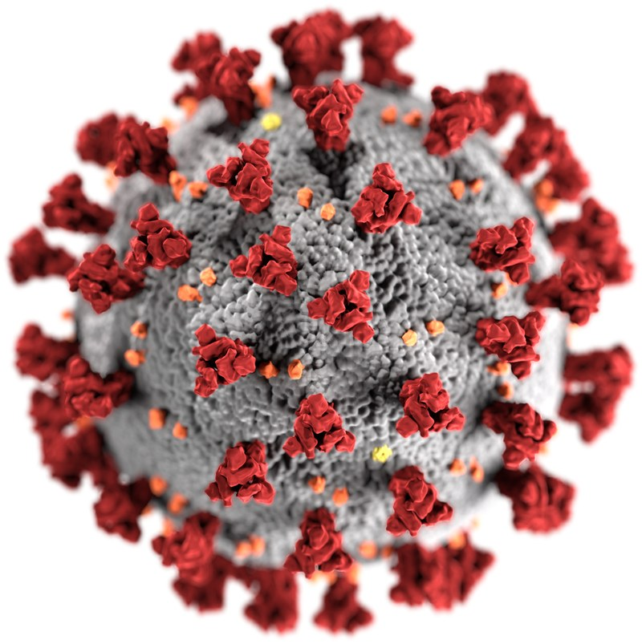
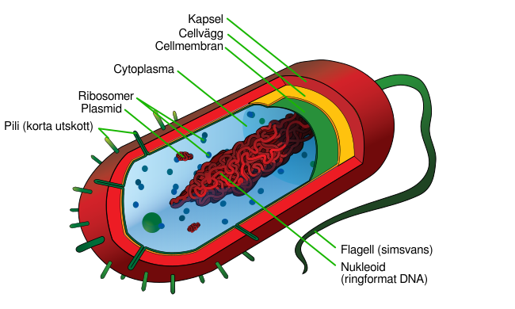
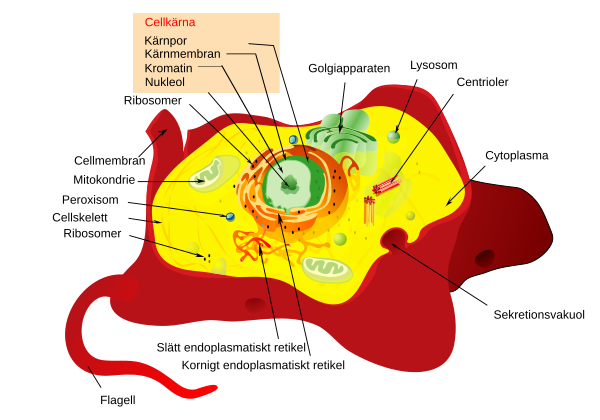
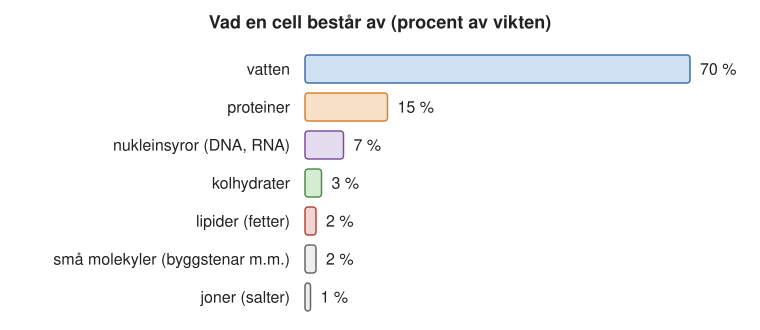
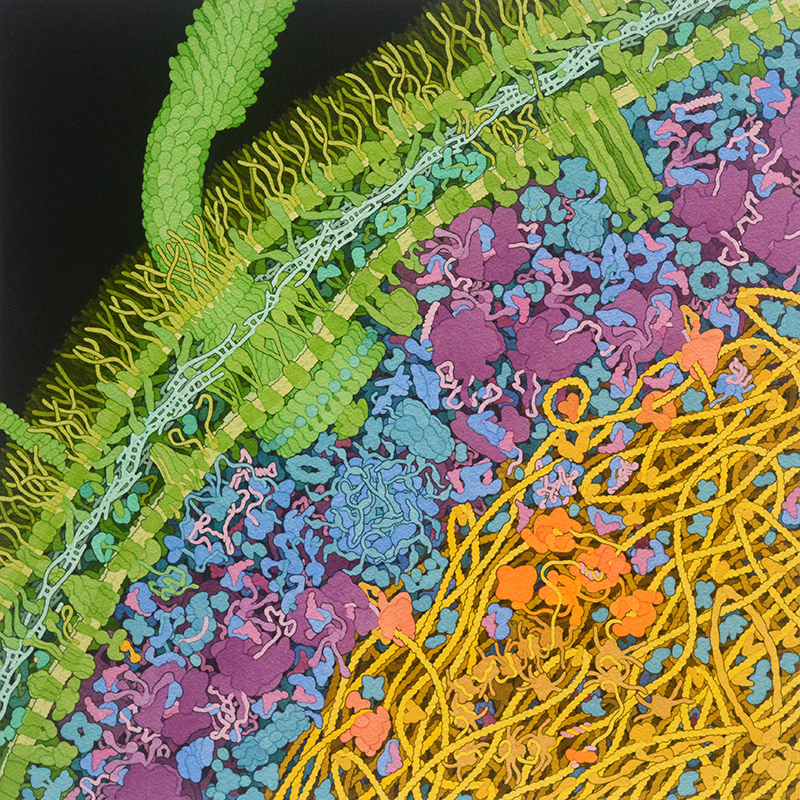
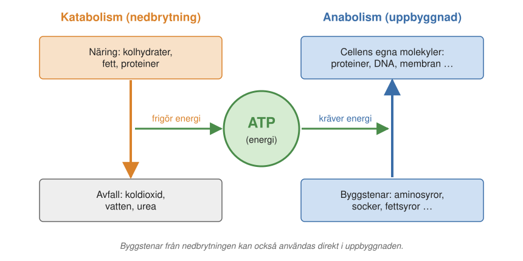
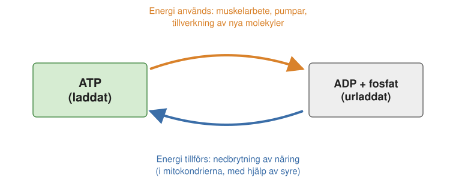
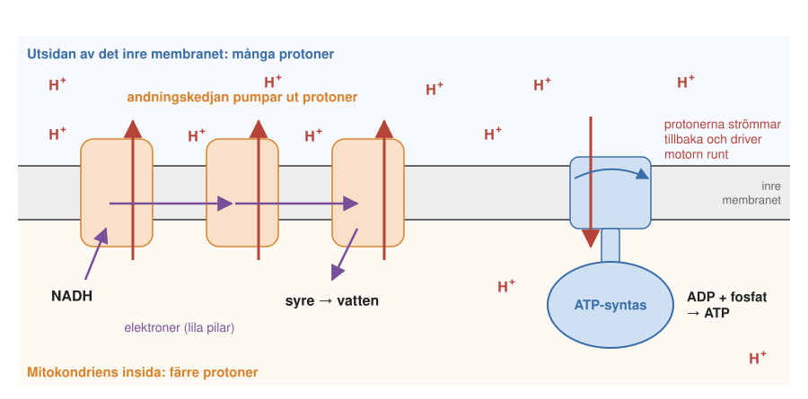
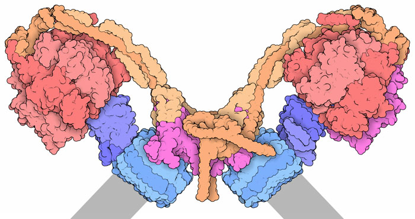
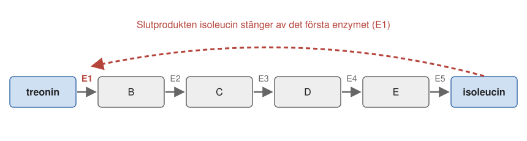

2 Livets molekyler och reaktioner
Vad är egentligen liv? Länge trodde man att levande varelser innehöll en särskild livskraft som saknades i död materia. I dag vet vi att det inte finns några mystiska krafter. En levande cell består av samma atomer som stenar, luft och vatten, och den följer samma kemiska och fysikaliska lagar. Det som gör cellen levande är hur molekylerna är organiserade och vad de gör tillsammans.
I det här kapitlet går vi igenom de viktigaste molekylerna i en cell och de kemiska reaktioner som håller cellen vid liv. Kapitlet är en grund för resten av boken: vi kommer att möta proteiner, membran, ATP och ämnesomsättning i nästan alla senare kapitel.
2.1 Vad är liv?
Om det inte är någon särskild livskraft, vad är det då som utmärker det levande? Biologer brukar beskriva liv med två egenskaper:
- Förmåga att föröka sig. En levande organism kan göra kopior av sig själv. För det behövs ärftlig information, som lagras i DNA, och ett maskineri som kan läsa av informationen och bygga nya molekyler.
- Förmåga att skaffa och omvandla energi. En levande cell tar upp energi från omgivningen, till exempel från mat eller solljus, och använder den för att bygga upp sig själv och för att utföra arbete.
Till detta hör att en levande cell ständigt måste hålla sig i balans. Hela tiden tas ämnen upp och hela tiden bryts ämnen ned och lämnar cellen. Ändå är cellens sammansättning ungefär densamma från en minut till nästa. Det kallas ett dynamiskt jämviktstillstånd (eng. steady state): som ett badkar där kranen står på och proppen är ur, men där vattennivån ändå är konstant eftersom inflöde och utflöde är lika stora. Att hålla den balansen kräver noggrann kontroll, och vi återkommer till hur cellen reglerar sin ämnesomsättning i slutet av kapitlet.
Är virus levande?
Med de två egenskaperna som måttstock kan vi pröva ett gränsfall: virus. Ett virus har ärftlig information, i form av DNA eller RNA, inslagen i ett skal av proteiner. Men ett virus kan inte föröka sig på egen hand och har ingen egen ämnesomsättning. För att föröka sig måste det ta sig in i en levande cell och få cellens maskineri att tillverka nya viruspartiklar. Därför räknas virus i allmänhet inte som levande.
Virus kan se mycket olika ut. Bakteriofagen T4, ett virus som infekterar bakterier, ser ut som en liten månlandare: ett huvud som rymmer arvsmassan och ben som fäster på bakteriens yta.
Ett virus som alla känner till är SARS-CoV-2, viruset som orsakar covid-19. Dess arvsmassa består av RNA och är för att vara ett virus ganska stor: omkring 30 000 byggstenar (nukleotider), som kodar för 29 proteiner. Ett av dem, spikproteinet, sitter på virusets yta och ger viruset dess karaktäristiska krona av utskott (därav namnet corona, se Figur 2.1). Spikproteinet fäster vid ett protein på ytan av våra celler som heter ACE2. Det är denna bindning som öppnar vägen in i cellen.

Bindningen mellan spikprotein och ACE2 förklarar också hur vaccinerna mot covid-19 fungerar. mRNA-vaccinerna innehåller instruktionen för att tillverka spikproteinet. Våra celler tillverkar då en tid lite spikprotein, och immunförsvaret lär sig att göra antikroppar mot det. Antikropparna fastnar på spikproteinet och hindrar det från att binda till ACE2, och därmed kan viruset inte ta sig in i cellerna.
Viruset förändras dock hela tiden genom mutationer, små förändringar i arvsmassan, och spikproteinet visar tydligt att små förändringar i ett proteins byggstenar kan få stora följder. Mutationer i den del av spikproteinet som binder till ACE2 kan göra att viruset binder bättre och smittar lättare, eller att antikroppar från tidigare infektioner och vaccinationer inte fastnar lika bra.
Omikron, som upptäcktes i slutet av 2021, hade 32 mutationer i spikproteinet. Den var mer smittsam än tidigare varianter men gav i regel mildare sjukdom. Sedan dess har nya omikronvarianter avlöst varandra. En av dem, XBB.1.5 med smeknamnet Kraken (2022), uppstod när två omikronvarianter blandade sina arvsmassor. Den tog sig in i cellerna ännu effektivare än tidigare varianter, men det fanns inget som tydde på att den var farligare.
2.2 Två sorters celler
Ett virus behöver alltså en cell för att föröka sig. Cellen är däremot levande, och alla levande organismer består av en eller flera celler. Cellerna är av två huvudtyper:
- Prokaryoter är små celler, oftast 1–10 mikrometer (tusendels millimeter) långa, utan cellkärna. Hit hör bakterierna och arkéerna, encelliga organismer som liknar bakterier till utseendet men är en egen gren av livet; många lever i heta källor eller mycket salt vatten. Deras DNA ligger fritt i cellen.
- Eukaryoter är större celler, ungefär 5–100 mikrometer. Deras DNA är inneslutet i en cellkärna, och de har också andra avgränsade utrymmen, organeller, med egna uppgifter. Ett exempel är mitokondrierna, cellens kraftverk, som vi återkommer till nedan. Djur, växter och svampar består av eukaryota celler, liksom många encelliga organismer.
Eftersom arkéerna är en egen gren talar man ofta om livets tre stora grenar: bakterier, arkéer och eukaryoter.
Figur 2.2 och Figur 2.3 visar en cell av vardera slaget.


2.3 Vad består en cell av?
Vad finns då inne i en cell? Om man vägde alla molekyler i en bakteriecell skulle man finna att ungefär 70 procent av vikten är vatten (Figur 2.4). Resten består till största delen av stora molekyler, makromolekyler: proteiner, nukleinsyror (DNA och RNA), kolhydrater och lipider. Därtill kommer små molekyler, som byggstenar till makromolekylerna, och joner, det vill säga laddade atomer som natrium, kalium och klorid.

Trots att det mesta är vatten är en cell inte en påse med vatten där några molekyler simmar omkring. Proteiner och andra makromolekyler är så tätt packade att de hela tiden stöter i varandra (Figur 2.5). Det är en bra bild att ha i huvudet när man läser om cellens kemi.

Makromolekyler: långa kedjor av enkla byggstenar
Innan vi ser på varje grupp av makromolekyler för sig ska vi se vad de har gemensamt: hur stora de är och hur de är byggda.
Makromolekyler är mycket stora. En vattenmolekyl väger 18 atommassenheter (en atommassenhet är ungefär vikten av en väteatom och kallas också en dalton). En makromolekyl väger från några tusen upp till flera miljoner atommassenheter, alltså hundratals till hundratusentals gånger mer än en vattenmolekyl. Proteinernas vikt anges därför ofta i kilodalton, tusen atommassenheter: ett vanligt protein väger några tiotal kilodalton.
Trots sin storlek är makromolekylerna byggda enligt en enkel princip. De är långa kedjor av små byggstenar, monomerer, som kopplats ihop en efter en, som pärlor på ett halsband. En sådan kedja kallas en polymer. Cellen behöver därför inte tillverka miljontals olika komplicerade molekyler från grunden, utan bara ett fåtal sorters byggstenar som den sedan sätter ihop på olika sätt (Tabell 2.1):
| Makromolekyl | Byggstenar | Exempel på uppgift |
|---|---|---|
| Proteiner | aminosyror (20 sorter) | utför nästan allt arbete i cellen |
| Nukleinsyror (DNA, RNA) | nukleotider (4 sorter i vardera) | lagrar och för vidare ärftlig information |
| Kolhydrater (polysackarider) | sockerarter, oftast glukos | energiförråd, byggmaterial i växternas cellväggar |
| Lipider | fettsyror m.m. (bildar inte kedjor) | energiförråd, bygger upp membran |
2.4 Proteiner gör nästan allt
Om DNA är cellens ritningar, så är proteinerna dess arbetare. Proteinerna utför nästan allt som händer i en cell:
- Katalys. Enzymer är proteiner som sätter fart på kemiska reaktioner, ofta miljontals gånger (Kapitel 4).
- Kommunikation. Receptorer är proteiner som tar emot signaler, till exempel hormoner, och för dem vidare in i cellen (Avsnitt 2.11.2, Avsnitt 8.1.1).
- Transport. Hemoglobin i de röda blodkropparna transporterar syre från lungorna ut i kroppen.
- Försvar. Antikroppar känner igen och binder till främmande ämnen, som spikproteinet på coronaviruset.
- Rörelse. Proteinerna aktin och myosin får musklerna att dra ihop sig.
- Struktur. Keratin bygger upp hår och naglar, och kollagen ger styrka åt hud och senor.
Hur kan en och samma sorts molekyl göra så olika saker? Svaret ligger i formen. Ett protein är en kedja av aminosyror, och ordningen mellan aminosyrorna bestämmer hur kedjan veckar sig till en bestämd tredimensionell form. Det är formen som avgör vad proteinet kan göra. Mer om detta i Kapitel 1 och Kapitel 14.
Hjälpmolekyler: vitaminer och metaller
Många proteiner klarar inte sitt arbete ensamma. De behöver små hjälpmolekyler, kofaktorer, som binder till proteinet. Det kan vara metalljoner som järn, zink eller magnesium, eller organiska molekyler som kallas koenzymer. Många koenzymer tillverkas i kroppen av vitaminer som vi måste få i oss med maten. Det är därför brist på vitaminer ger sjukdom: utan vitaminet kan kroppen inte tillverka koenzymet, och då fungerar inte enzymerna som behöver det. Tabell 2.2 ger några exempel.
| Vitamin | Behövs för | Bristsjukdom (exempel) |
|---|---|---|
| B1 (tiamin) | nedbrytning av socker | beriberi |
| B3 (niacin) | överföring av elektroner | pellagra (hudinflammation, diarré, förvirring) |
| B6 | omvandling av aminosyror | blodbrist, kramper |
| B12 | flera reaktioner i ämnesomsättningen | blodbrist och nervskador |
| Folsyra | tillverkning av DNA:s byggstenar | missbildningar hos foster |
Genom och proteom
Proteinerna tillverkas efter instruktioner i cellens DNA. Därför är två begrepp bra att känna till redan nu: genom och proteom.
Allt DNA i en cell kallas cellens genom. Genomet är i princip detsamma i alla celler i en organism: en levercell och en hjärncell hos samma människa har samma DNA. Genomet ändras inte heller med vad vi äter, och med åldern bara genom små, slumpvisa förändringar, mutationer.
DNA-molekylen är mycket lång i förhållande till cellen. En bakterie, Escherichia coli, är ungefär 2 mikrometer lång, men om man drog ut dess DNA till en rak tråd skulle den bli 1,7 millimeter, nästan tusen gånger längre än cellen. DNA:t måste alltså vara mycket tätt packat.
Alla proteiner i en cell kallas cellens proteom. Proteomet skiljer sig mellan olika celler i samma kropp: en levercell tillverkar andra proteiner än en muskelcell, trots att de har samma DNA. Proteomet ändras också med tiden, till exempel beroende på vad vi har ätit och vilken tid på dygnet det är. Det är alltså inte bara vilka gener en cell har som spelar roll, utan vilka av dem som används. Vi återkommer till genom och proteom i Kapitel 11.
2.5 Kolhydrater: socker i många former
Kolhydrater är en viktig källa till energi och till kolatomer, som cellen behöver för att bygga nya molekyler. Bröd, pasta, potatis och kakor är exempel på kolhydratrik mat.
Den enklaste formen av kolhydrat är ett enkelt socker, en monosackarid. Den viktigaste är glukos (druvsocker), som är det socker som finns i blodet. Ett annat exempel är fruktos (fruktsocker). Två sockermolekyler kan kopplas ihop till en disackarid. Vanligt socker, sackaros (rör- eller betsocker), består av en glukos och en fruktos, och mjölksocker, laktos, av en glukos och en galaktos.
Långa kedjor av sockermolekyler kallas polysackarider. Tre av de viktigaste består alla av glukos, men kopplad på olika sätt:
- Stärkelse är växternas sätt att lagra energi, till exempel i potatis och sädeskorn.
- Glykogen är djurens sätt att lagra energi, främst i levern och musklerna.
- Cellulosa är byggmaterial i växternas cellväggar. Den är det vanligaste organiska ämnet på jorden och finns i trä, bomull och papper.
Skillnaden mellan stärkelse och cellulosa ligger bara i hur glukosenheterna sitter ihop. Ändå är skillnaden stor för oss: vi har enzymer som kan bryta ned stärkelse till glukos, men inga som kan bryta ned cellulosa. Kor och andra idisslare kan leva på gräs bara tack vare bakterier i magen som har sådana enzymer.
Kolhydrater sitter också på utsidan av våra celler, där korta kedjor av socker, oligosackarider, är fästa vid proteiner och lipider i cellmembranet. Våra blodgrupper är ett exempel. Skillnaden mellan blodgrupperna A, B och O är att de röda blodkropparna har lite olika sockerkedjor på sin yta. Kedjorna i blodgrupp A och B har varsin extra sockermolekyl, av olika slag, som saknas i blodgrupp O. Immunförsvaret kan känna igen sockerkedjor som inte är kroppens egna, och därför måste man få blod av rätt blodgrupp vid en blodtransfusion.
2.6 Lipider: fett, membran och kolesterol
Lipider är ett samlingsnamn för ämnen som löser sig i fett men inte i vatten. De har tre huvuduppgifter: de lagrar energi, de bygger upp cellernas membran och de fungerar som signalämnen, till exempel hormoner.
Många lipider innehåller fettsyror, långa kedjor av kol- och väteatomer med en sur grupp i ena änden. Fettsyrorna kan vara mättade, med raka kedjor som packas tätt, eller omättade, med böjar i kedjorna som gör att de inte kan packas lika tätt. Det förklarar varför smör, som har mycket mättat fett, är fast i rumstemperatur, medan olivolja, med mer omättat fett, är flytande. Omega-3-fettsyror, som finns i fet fisk och vissa oljor, är fleromättade: de har flera böjar.
Cellerna utnyttjar detta. Ju fler omättade fettsyror ett membran innehåller, desto mer lättflytande är det. Vissa organismer kan ändra andelen omättade fettsyror för att membranen inte ska stelna när det blir kallt.
De viktigaste grupperna av lipider är:
- Fett (triglycerider). En molekyl av glycerol med tre fettsyror. Det är den form som kroppen lagrar energi i, i fettcellerna, och fettet isolerar också mot kyla.
- Fosfolipider. En glycerol med två fettsyror och ett vattenlösligt “huvud” med en fosfatgrupp. Fosfolipider har alltså en ände som trivs i vatten och en ände som inte gör det. Därför ordnar de sig spontant i dubbla lager, med fettsyrorna inåt och huvudena utåt mot vattnet. Så bildas cellernas membran, som vi återkommer till i Kapitel 7.
- Kolesterol. En stel molekyl av fyra sammanbyggda ringar av kolatomer. Kolesterol gör cellmembranen stabilare, och det är också utgångsmaterial för D-vitamin och för flera hormoner, bland annat könshormonerna. Kolesterol löser sig inte i blodet och transporteras därför i små partiklar av fett och protein. Det är dessa partiklar, HDL och LDL, som brukar kallas “gott” och “ont” kolesterol.
2.7 Ämnesomsättning: cellens kemiska fabrik
Hittills har vi sett vilka molekyler en cell består av. Nu ska vi se vad cellen gör med dem. Allt det som händer kemiskt i en cell kallas med ett gemensamt namn metabolism, eller på svenska ämnesomsättning. Ämnesomsättningen har fyra syften:
- att skaffa energi,
- att skaffa utgångsmaterial för att tillverka cellens beståndsdelar,
- att tillverka cellens egna molekyler, och
- att utföra annat arbete, till exempel att röra sig eller att pumpa ämnen in i eller ut ur cellen.
Ämnesomsättningen brukar delas i två delar (Figur 2.6):
- Katabolism är nedbrytning. Stora energirika molekyler från maten – kolhydrater, fett och proteiner – bryts ned till mindre molekyler, och till sist till koldioxid, vatten och urea (ett kväveinnehållande avfallsämne som lämnar kroppen med urinen). Vid nedbrytningen frigörs energi.
- Anabolism är uppbyggnad. Av små byggstenar, som aminosyror och socker, tillverkar cellen sina egna stora molekyler: proteiner, nukleinsyror, polysackarider och lipider. Uppbyggnaden kräver energi.

De två delarna hänger ihop. Energin som frigörs vid nedbrytningen används vid uppbyggnaden, och många av de små molekyler som bildas vid nedbrytningen används som byggstenar.
2.8 ATP: cellens energivaluta
Energin från nedbrytningen av maten kan inte användas direkt. Den måste först lagras i en form som cellen kan använda överallt. Den formen är framför allt molekylen ATP, adenosintrifosfat.
ATP har tre fosfatgrupper i rad. Den yttersta fosfatgruppen kan spjälkas av, och då frigörs energi som cellen kan använda för att utföra arbete. Kvar blir ADP, adenosindifosfat, och en fri fosfatgrupp. För att göra ATP av ADP och fosfat igen krävs energi, och den kommer från nedbrytningen av maten (Figur 2.7).

ATP brukar kallas cellens energivaluta, och jämförelsen är träffande. Precis som pengar gör det möjligt att byta arbete mot mat utan att byta direkt, gör ATP det möjligt att använda energin från en reaktion till en helt annan reaktion. Nedbrytningsprocesserna bildar ATP, och uppbyggnadsprocesserna och cellens arbete förbrukar ATP. Omsättningen är enorm: en vuxen människa bildar och förbrukar ungefär sin egen kroppsvikt i ATP varje dag, trots att kroppen bara innehåller en liten mängd ATP åt gången. Varje ATP-molekyl laddas alltså ur och upp igen många hundra gånger om dagen.
Utöver ATP använder cellen några andra bärare av energi, som NADH och FADH2 (namnen behöver du inte lära dig). De bär på elektroner som frigjorts vid nedbrytningen av maten. Man kan tänka sig att elektronerna i maten sitter högt upp, som vatten i en damm, och när de till sist får falla ned till syret frigörs energi. NADH och FADH2 lämnar elektronerna vidare till andningskedjan, som vi ska se strax.
Att ta bort elektroner från ett ämne kallar kemister oxidation, och att tillföra elektroner reduktion. Vid nedbrytningen oxideras alltså näringsämnena. Vid uppbyggnaden går det åt andra hållet: där behövs elektroner, och dem levererar en nära släkting till NADH, som heter NADPH.
2.9 Från mat till ATP
Nu kan vi följa hur energin i maten till sist hamnar i ATP. Nedbrytningen sker i flera steg. Kolhydrater bryts ned till glukos, fett till fettsyror och glycerol, och proteiner till aminosyror. Glukos bryts sedan ned i glykolysen, en kedja av tio reaktioner i cellens cytoplasma (vätskan som fyller cellen utanför organellerna), till en mindre molekyl som heter pyruvat. Fettsyrorna klipps ned två kolatomer i taget, och från aminosyrorna tas kvävet bort och blir urea.
Alla dessa vägar leder till en och samma molekyl, acetyl-CoA, en bit med två kolatomer från maten fäst vid en bärarmolekyl. Det är en sorts gemensam knutpunkt i ämnesomsättningen: oavsett om energin kommer från bröd, smör eller skinka passerar den acetyl-CoA.
Acetyl-CoA går sedan in i citronsyracykeln, en serie reaktioner i mitokondrierna där kolatomerna till sist lämnar cellen som koldioxid, den koldioxid vi andas ut. Det mesta av energin hamnar dock inte direkt i ATP, utan i elektronbärarna NADH och FADH2.
Andningskedjan bygger upp en spänning
Hur blir då energin i NADH och FADH2 till ATP? Det sista steget sker i mitokondriernas inre membran, i den så kallade andningskedjan. Där lämnar NADH och FADH2 ifrån sig sina elektroner, som förs vidare genom en kedja av stora proteinkomplex till slutmottagaren, syre. Syret förenas med elektronerna och vätejoner och bildar vatten. Det är därför vi behöver andas: syret vi andas in används i andningskedjan.
När elektronerna passerar genom kedjan används energin till att pumpa protoner från mitokondriens insida till utsidan av det inre membranet. En proton är en väteatom som har förlorat sin enda elektron, alltså en naken atomkärna med en positiv laddning. Därför kallas den också vätejon (H+).
Halten av protoner avgör hur surt något är. Den mäts med pH-skalan: ju fler protoner, desto lägre pH och desto surare. Rent vatten har pH 7, citronsaft omkring 2 och magsaft ännu lägre. Insidan av de flesta celler har ett pH strax över 7. Varje steg på skalan motsvarar tio gånger så många protoner, så en liten skillnad i pH är en stor skillnad i protonhalt.
När andningskedjan pumpar ut protoner blir det fler protoner på ena sidan av membranet än på den andra, ungefär som när vatten pumpas upp i en damm. Skillnaden kallas en protongradient och är en sorts lagrad energi: membranet blir laddat som ett batteri (Figur 2.8).

ATP-syntas: en molekylär vattenkvarn
Protonerna vill tillbaka till insidan, men membranet släpper inte igenom dem. Den viktigaste vägen tillbaka går genom ett enzym som heter ATP-syntas (Figur 2.9). När protonerna passerar genom den del av enzymet som sitter i membranet, börjar den delen att rotera, som ett vattenhjul i en bäck. Rotationen förs vidare upp i enzymets huvud, där den tvingar fram formförändringar som pressar ihop ADP och fosfat till ATP.

ATP-syntas är en av naturens mest fascinerande maskiner, en verklig motor i molekylär skala. Energin omvandlas i flera steg. Den kemiska energin i maten blir lagrad energi i protongradienten, som i ett laddat batteri. Den lagrade energin blir mekanisk energi i den roterande motorn, och den blir till sist kemisk energi igen i ATP. Upptäckten av hur ATP-syntas fungerar belönades med Nobelpriset i kemi 1997 (Paul Boyer och John Walker). Vi återkommer till molekylära maskiner i Kapitel 9.
När energin blir värme
Protongradienten behöver inte alltid användas för att göra ATP. I det så kallade bruna fettet finns ett protein, termogenin, som släpper tillbaka protonerna genom membranet utan att något ATP bildas. Energin i protongradienten blir då i stället värme. Det kallas att mitokondrierna frikopplas.
Frikoppling är ett sätt att hålla värmen. Det sker hos små däggdjur som går i ide, som igelkottar och fladdermöss, hos nyfödda barn, som har mycket brunt fett, och i viss mån hos vuxna som utsätts för kyla.
Djur som går i ide behöver också stora förråd av energi att ta av. Hur mycket energi som kan lagras som fett visar björnen. Inför vintern äter den upp till 20 000 kilokalorier om dagen och lagrar energin som fett. Under vintervilan håller den sedan kroppstemperaturen på 32–35 grader i flera månader utan att äta eller dricka.
Frikopplingen kan också gå fel. Vid en mycket ovanlig mitokondriesjukdom, Lufts sjukdom, är mitokondrierna frikopplade hela tiden. Sjukdomen beskrevs först av den svenske läkaren Rolf Luft 1962. Den som är sjuk får en extremt hög ämnesomsättning, svettas mycket, har feber och är svag, trots att den äter mycket.
Samma sak kan framkallas med ett ämne utifrån. Dinitrofenol, som frikopplar mitokondrierna, såldes på 1930-talet som bantningsmedel. Det gav snabb viktnedgång men var livsfarligt och orsakade dödsfall.
2.10 Vad används ATP till?
ATP används till nästan allt arbete i cellen. Tre exempel:
Uppbyggnad. Att tillverka proteiner, DNA och andra makromolekyler kräver energi, som tas från ATP. Den energikrävande uppbyggnaden använder delvis samma vägar som nedbrytningen, fast åt andra hållet.
Muskelarbete. När en muskel drar ihop sig glider två sorters proteintrådar, aktin och myosin, förbi varandra. Myosin har ett litet “huvud” som binder ATP. När ATP spjälkas och fosfatet lossnar, ändrar huvudet form och drar aktintråden med sig, som en roddare som tar ett årtag. Sedan binder ett nytt ATP och huvudet släpper taget och spänns för nästa tag. Ett enormt antal sådana årtag i samma riktning får muskeln att dra ihop sig, vare sig det gäller en sprinter på hundra meter eller en diskuskastare.
Pumpar. Cellens insida och utsida har mycket olika halter av joner. Inuti cellen är halten kalium ungefär 35 gånger högre än utanför, medan natriumhalten är mer än tio gånger lägre. Skillnaden upprätthålls av en pump i cellmembranet, natrium-kaliumpumpen, som använder ATP för att pumpa ut natrium och in kalium. Pumpen arbetar mot strömmen, ungefär som en vattenpump som pumpar upp vatten i ett torn. Den gör av med en stor del av kroppens ATP; i nervcellerna, som behöver jongradienterna för att skicka signaler, är andelen ännu större. Vi återkommer till membranets pumpar i Kapitel 8.
2.11 Reglering: rätt mängd vid rätt tillfälle
En cell med tusentals olika kemiska reaktioner måste hålla ordning på dem. Den får inte tillverka mer av ett ämne än den behöver, och nedbrytningen av näring ska öka när cellen behöver mer energi. Ämnesomsättningen regleras på flera sätt.
Återkoppling
Ett viktigt sätt är återkoppling (eng. feedback). I en kedja av reaktioner, där ett ämne steg för steg omvandlas till ett annat, kan slutprodukten själv bromsa det första steget. Principen är densamma som i en termostat: när det blivit varmt nog stängs elementet av.
Ett exempel är hur bakterier tillverkar aminosyran isoleucin från aminosyran treonin, i fem steg med fem olika enzymer (Figur 2.10). När det finns tillräckligt med isoleucin binder isoleucin till det första enzymet och stänger av det. Då stannar hela kedjan, och inget treonin slösas bort. När isoleucinet förbrukats släpper det från enzymet, och tillverkningen kommer igång igen.

Isoleucinet binder till enzymet på ett annat ställe än där reaktionen sker, och ändrar därmed enzymets form. Den sortens reglering kallas allosterisk reglering.
Det omvända finns också, framkoppling (eng. feed-forward): ett ämne tidigt i en kedja aktiverar ett enzym längre fram, så att cellen är förberedd på det som är på väg.
Hormoner
I en flercellig organism måste också olika organ samordnas. Det sköts bland annat av hormoner, signalämnen som förs med blodet och påverkar celler på andra ställen i kroppen.
Ett exempel är adrenalin, som utsöndras vid stress, till exempel när vi blir rädda. Adrenalinet binder till en receptor på utsidan av muskel- och leverceller. Receptorn ändrar då form, och det sätter i gång en kedja av händelser inne i cellen. Först aktiveras ett enzym som av ATP gör ett litet budbärarämne, cykliskt AMP (cAMP). cAMP aktiverar i sin tur ett annat protein, som aktiverar ett tredje, och så vidare. Varje steg förstärker signalen, eftersom varje aktiverat enzym kan aktivera många molekyler i nästa steg. En sådan kedja kallas en signalkaskad.
I slutet av kaskaden aktiveras ett enzym som bryter ned glykogen. I musklerna används sockret direkt i cellen för att göra ATP, medan levern släpper ut glukos i blodet, som förs vidare till musklerna och andra organ. Inom några sekunder har musklerna mer bränsle, och kroppen är redo att springa eller slåss. Vi återkommer till receptorerna på cellytan i Avsnitt 8.1.1 och Avsnitt 17.3.2.
När vi fastar
Hormonerna styr också vad kroppen gör när det inte kommer någon ny mat. När blodsockret blir lågt, till exempel efter en natts sömn eller vid längre fasta, utsöndras hormonet glukagon (och adrenalin). Hormonerna får fettcellerna att bryta ned sitt lagrade fett till fettsyror och glycerol. Fettsyrorna förs med blodet till musklerna, där de bryts ned och ger ATP, och till levern.
Vid längre fasta händer något mer i levern. Levern omvandlar då en del av citronsyracykelns ämnen till glukos, för att hålla uppe blodsockret till hjärnan. Cykeln behöver de ämnena för att hålla igång, och utan dem går den långsammare, ungefär som ett kugghjul som saknar kuggar. Levern kan då inte bryta ned all acetyl-CoA som bildas från fettsyrorna. Överskottet görs i stället om till ketonkroppar, små vattenlösliga molekyler som går ut i blodet. Fördelen med ketonkropparna är att hjärnan kan använda dem som bränsle, vilket den inte kan med fettsyror. En av ketonkropparna är aceton, och den som fastat länge kan därför få en lätt doft av aceton i andedräkten.
2.12 Hela kartan
Det vi har gått igenom är bara en liten del av cellens ämnesomsättning. Om man ritar upp alla kända reaktioner i en cell blir det en karta med tusentals ämnen och pilar mellan dem, som ett tunnelbanenät i en storstad. Alla små molekyler som deltar i ämnesomsättningen, alltså byggstenar, mellanprodukter och avfallsämnen, kallas tillsammans cellens metabolom, och att kartlägga det är ett eget forskningsfält, metabolomik. Men grundprinciperna är de vi har sett: näring bryts ned och ger energi i form av ATP, ATP används för att bygga upp cellen och utföra arbete, och alltihop regleras så att cellen hålls i balans.
2.13 Sammanfattning
- Levande organismer kan föröka sig och skaffa och omvandla energi, och de håller sig i ett dynamiskt jämviktstillstånd. Virus kan inte föröka sig på egen hand och räknas inte som levande.
- Det finns två sorters celler: små prokaryota celler utan cellkärna (bakterier och arkéer) och större eukaryota celler med cellkärna och andra organeller (bland annat djur, växter och svampar).
- En cell består till cirka 70 procent av vatten. Resten är framför allt makromolekyler: proteiner, nukleinsyror, kolhydrater och lipider, de flesta uppbyggda som långa kedjor av enkla byggstenar.
- Proteinerna utför nästan allt arbete i cellen. Många behöver hjälpmolekyler, och flera av dem tillverkas av vitaminer.
- Ämnesomsättningen består av nedbrytning (katabolism), som frigör energi, och uppbyggnad (anabolism), som kräver energi.
- ATP är cellens energivaluta. Det mesta ATP:t tillverkas av ATP-syntas, en roterande motor i mitokondriernas membran, som drivs av en protongradient som andningskedjan byggt upp med hjälp av syre.
- Ämnesomsättningen regleras, bland annat genom återkoppling, där en slutprodukt bromsar sin egen tillverkning, och genom hormoner som adrenalin och glukagon.
2.14 Nyckelbegrepp
- dynamiskt jämviktstillstånd – Ett tillstånd där ämnen hela tiden tas upp och omsätts, men där inflöde och utflöde är lika stora så att sammansättningen är konstant (eng. steady state).
- virus – Arvsmassa (DNA eller RNA) i ett skal av proteiner. Kan bara föröka sig inuti en levande cell och räknas därför inte som levande.
- prokaryot – Cell utan cellkärna, oftast 1–10 mikrometer stor. Bakterier och arkéer är prokaryoter.
- eukaryot – Cell med cellkärna och andra organeller, oftast 5–100 mikrometer stor. Djur, växter och svampar består av eukaryota celler.
- organell – Ett avgränsat utrymme i en eukaryot cell med en egen uppgift, till exempel cellkärnan eller mitokondrierna.
- makromolekyl – Mycket stor molekyl, till exempel ett protein, en nukleinsyra eller en polysackarid. De flesta är polymerer.
- polymer – En lång kedja av många likartade byggstenar (monomerer) som kopplats ihop.
- kofaktor – En liten hjälpmolekyl eller metalljon som ett protein behöver för att fungera. Organiska kofaktorer kallas koenzymer och tillverkas ofta av vitaminer.
- genom – Allt DNA i en cell. I princip detsamma i alla celler hos en organism.
- proteom – Alla proteiner i en cell. Skiljer sig mellan olika celltyper och ändras med tiden.
- polysackarid – Lång kedja av sockermolekyler, till exempel stärkelse, glykogen och cellulosa.
- glykogen – Polysackarid av glukos som djur, även människan, lagrar energi i, framför allt i levern och musklerna.
- lipid – Samlingsnamn för fettlösliga ämnen som fett, fosfolipider och kolesterol.
- fosfolipid – Lipid med en vattenlöslig ände och två fettsyror. Fosfolipider bildar spontant de dubbla lager som cellmembranen består av.
- metabolom – Alla små molekyler som deltar i en cells ämnesomsättning: byggstenar, mellanprodukter och avfallsämnen.
- metabolism – Ämnesomsättning: alla kemiska reaktioner i en cell eller organism.
- katabolism – Den del av ämnesomsättningen där molekyler bryts ned. Frigör energi.
- anabolism – Den del av ämnesomsättningen där cellen bygger upp sina egna molekyler. Kräver energi.
- ATP – Adenosintrifosfat, cellens energivaluta. När den yttersta fosfatgruppen spjälkas av frigörs energi, och kvar blir ADP.
- andningskedjan – En kedja av proteinkomplex i mitokondriernas inre membran som för elektroner till syre och samtidigt pumpar protoner över membranet.
- protongradient – Skillnad i halten av protoner (vätejoner) mellan membranets två sidor. En form av lagrad energi.
- mitokondrie – Organell i eukaryota celler där det mesta av cellens ATP tillverkas, med hjälp av syre. Kallas cellens kraftverk.
- proton – En väteatom som förlorat sin elektron, en positivt laddad atomkärna. Kallas också vätejon (H+).
- jon – En atom eller molekyl med elektrisk laddning, till exempel natrium (Na+), kalium (K+) och klorid (Cl−).
- pH – Ett mått på hur surt något är. Ju fler protoner, desto lägre pH. Neutralt vatten har pH 7; varje steg är en tiofaldig skillnad i protonhalt.
- dalton – Atommassenhet, ungefär vikten av en väteatom. Proteiners vikt anges ofta i kilodalton (tusen dalton).
- NADH – En bärare av elektroner som tar upp energi vid nedbrytningen av maten och lämnar den vidare till andningskedjan. Släktingen NADPH levererar elektroner vid uppbyggnaden.
- glykolys – Den första delen av nedbrytningen av glukos: tio reaktioner i cellens cytoplasma som gör glukos till pyruvat.
- oxidation – När elektroner tas bort från ett ämne. Motsatsen, när elektroner tillförs, kallas reduktion.
- cykliskt AMP – cAMP, ett litet budbärarämne som cellen gör av ATP när ett hormon som adrenalin binder till sin receptor. För signalen vidare inne i cellen.
- arkéer – Encelliga organismer utan cellkärna som liknar bakterier men är en egen gren av livet. Många lever i extrema miljöer.
- ATP-syntas – Enzym i mitokondriernas inre membran (och i kloroplaster och bakterier) som tillverkar ATP. Drivs av protoner som strömmar genom det och får en del av enzymet att rotera.
- frikoppling – När protoner släpps tillbaka över mitokondriemembranet utan att ATP bildas, så att energin blir värme, till exempel i brunt fett.
- återkoppling – När slutprodukten i en kedja av reaktioner bromsar det första steget, så att cellen inte tillverkar mer än den behöver (eng. feedback).
- hormon – Signalämne som förs med blodet och påverkar celler i andra delar av kroppen, till exempel adrenalin, glukagon och insulin.
- ketonkroppar – Små vattenlösliga molekyler som levern gör av fettsyror vid fasta. Hjärnan kan använda dem som bränsle.
- mutation – En förändring i arvsmassans bassekvens, i DNA (eller i RNA hos vissa virus).
2.15 Testa dig själv
Flervalsfrågor
Välj ett svar och tryck på Rätta. Svarsalternativen visas i ny ordning varje gång.
Fundera vidare
2.1 Förklara med egna ord hur energin i maten till slut hamnar i ATP. Använd begreppen nedbrytning, andningskedjan, protongradient och ATP-syntas.
2.2 En levercell och en hjärncell hos samma person har samma genom men olika proteom. Vad betyder det, och hur kan det komma sig?
2.3 Varför kan brist på ett vitamin ge sjukdom, trots att vitaminer inte används som energi eller byggmaterial i någon större mängd?
2.4 Följ en skinkmacka genom kroppen. Vad händer med kolhydraterna i brödet, proteinet i skinkan och fettet i smöret?
Hjälp oss att förbättra kapitlet
Hittade du ett fel, eller något som var svårt att förstå? Skicka ett förslag i förslagsformuläret (kräver inloggning med SU-konto). Lärarna läser alla förslag inför nästa version av boken.
2.16 Läs mer
- Ämnesomsättning och Adenosintrifosfat på svenska Wikipedia.
- ATP Synthase, Molecule of the Month på PDB-101 (på engelska), med bilder av David S. Goodsell.
- Nobelpriset i kemi 1997, för upptäckterna om hur ATP tillverkas och hur natrium-kaliumpumpen fungerar (på engelska).
- Cellular respiration på engelska Wikipedia, med bra översiktsbilder av hela vägen från glukos till ATP.